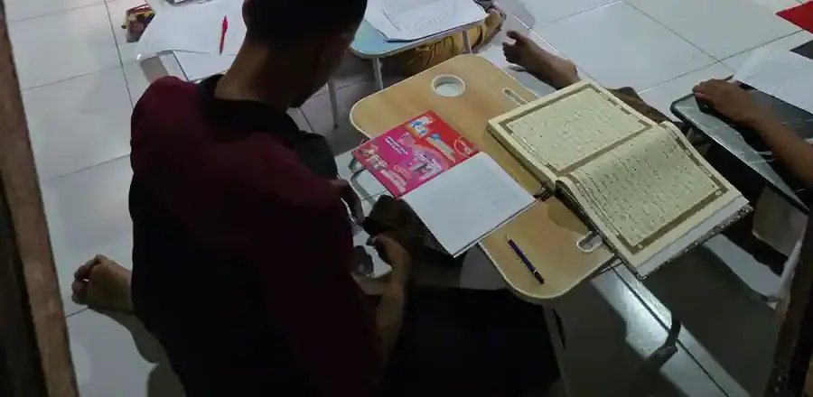

Singkatnya: strategi mengajar anak autis di kelas yang paling didukung bukti adalah membuat pembelajaran terstruktur, dapat diprediksi, dan visual: jadwal dan instruksi bergambar, tugas dipecah menjadi langkah kecil, bantuan (prompt) yang dikurangi bertahap, penguatan positif, persiapan transisi, pengaturan lingkungan sensorik, dan keterlibatan teman sebaya. Tinjauan sistematis Hume dan rekan (2021) atas 972 artikel penelitian menemukan 28 praktik berbasis bukti untuk anak dan remaja autis, dan sebagian besar bisa diterapkan guru di kelas. Kuncinya, pilih strategi berdasarkan kebutuhan anak itu sendiri, karena setiap anak autis berbeda.
Untuk siapa artikel ini
Artikel ini ditujukan untuk guru kelas, guru pembimbing khusus, pendamping, dan orang tua yang ingin memahami cara mendukung anak autis belajar di kelas. Isinya informasi pendidikan umum, bukan pengganti asesmen oleh psikolog, dokter, atau tim sekolah yang mengenal anak secara langsung.
Daftar Isi
- Memahami cara belajar anak autis
- Apa kata penelitian: 28 praktik berbasis bukti
- 10 strategi mengajar anak autis di kelas
- Tantangan umum di kelas dan cara menyikapinya
- Akomodasi yang layak menurut aturan di Indonesia
- Kerja sama guru, GPK, dan orang tua
- Kesalahan yang sering terjadi
- Pertanyaan yang sering diajukan
Memahami Cara Belajar Anak Autis
Menurut WHO, autisme atau gangguan spektrum autisme adalah sekelompok kondisi beragam yang berkaitan dengan perkembangan otak. Cirinya antara lain kesulitan dalam interaksi sosial dan komunikasi, pola aktivitas dan perilaku yang tidak biasa, kesulitan berpindah dari satu aktivitas ke aktivitas lain, perhatian yang besar pada detail, dan reaksi yang tidak biasa terhadap sensasi. WHO memperkirakan pada 2021 sekitar 1 dari 127 orang di dunia adalah autis. Di Amerika Serikat, CDC melaporkan sekitar 1 dari 31 anak usia 8 tahun teridentifikasi autis menurut jaringan pemantauan ADDM. Artinya, besar kemungkinan setiap guru akan mengajar anak autis setidaknya sekali dalam kariernya.
WHO juga menekankan bahwa kemampuan dan kebutuhan orang autis sangat bervariasi dan dapat berubah seiring waktu. Ada anak autis yang membaca jauh di atas teman sekelasnya tetapi kesulitan bekerja dalam kelompok, ada pula yang membutuhkan dukungan besar untuk berkomunikasi. Karena itu, label "autis" saja tidak cukup untuk merancang pembelajaran. Penjelasan dasar tentang kondisi ini ada di artikel autisme adalah, dan perbedaan tingkat kebutuhan dukungan dibahas di artikel autisme level 1, 2, dan 3.
Dari ciri-ciri di atas, ada beberapa pola yang sering terlihat di kelas dan penting dipahami guru:
- Kebutuhan akan keteraturan. Perubahan mendadak, misalnya jadwal yang digeser tanpa pemberitahuan, bisa memicu kecemasan.
- Kekuatan pemrosesan visual. CDC menjelaskan bahwa pendekatan TEACCH didasarkan pada gagasan bahwa orang autis berkembang baik dengan konsistensi dan pembelajaran visual.
- Kesulitan memahami instruksi lisan yang panjang atau bahasa kiasan, sehingga instruksi perlu singkat dan konkret.
- Kepekaan sensorik terhadap suara, cahaya, sentuhan, atau keramaian, yang bisa membuat anak sulit berkonsentrasi.
- Minat khusus yang kuat, yang bisa menjadi pintu masuk motivasi belajar.
Apa Kata Penelitian: 28 Praktik Berbasis Bukti
Rujukan terpenting untuk guru adalah tinjauan sistematis dari National Clearinghouse on Autism Evidence and Practice di University of North Carolina. Dalam publikasi Hume dan rekan (2021) di Journal of Autism and Developmental Disorders, tim peneliti menelusuri literatur intervensi terbitan 1990 sampai 2017. Pencarian awal menghasilkan 31.779 artikel, lalu 567 studi baru lolos penyaringan. Digabung dengan tinjauan sebelumnya, total 972 artikel disintesis, dan 28 praktik intervensi terfokus memenuhi kriteria praktik berbasis bukti.
Beberapa praktik dalam daftar itu (teks lengkap di PMC) yang paling relevan untuk kelas antara lain:
| Praktik berbasis bukti | Inti cara kerjanya | Contoh di kelas |
|---|---|---|
| Dukungan visual (visual supports) | Informasi disajikan dalam bentuk gambar, tulisan, atau benda | Jadwal bergambar di meja, kartu langkah kerja, label rak |
| Intervensi berbasis anteseden | Mengatur kondisi sebelum perilaku muncul | Memberi peringatan sebelum pergantian pelajaran, mengatur posisi duduk |
| Prompting | Bantuan (isyarat, contoh, bantuan fisik) yang dikurangi bertahap | Menunjuk soal pertama, lalu hanya mengetuk meja, lalu tanpa bantuan |
| Penguatan (reinforcement) | Konsekuensi yang membuat perilaku diharapkan lebih sering muncul | Pujian spesifik, token, waktu bebas untuk kegiatan yang disukai |
| Analisis tugas (task analysis) | Keterampilan dipecah menjadi langkah kecil yang diajarkan berurutan | Langkah menulis kalimat, langkah merapikan meja |
| Time delay | Jeda waktu sebelum bantuan diberikan, agar anak mencoba sendiri | Menunggu 3 sampai 5 detik sebelum memberi petunjuk |
| Video modeling | Anak menonton contoh perilaku lewat video lalu menirukannya | Video singkat cara antre cuci tangan atau cara meminta bantuan |
| Narasi sosial (social narratives) | Cerita pendek yang menjelaskan situasi sosial dan respons yang diharapkan | Cerita bergambar tentang upacara bendera atau kunjungan museum |
| Instruksi dan intervensi berbasis teman sebaya | Teman sebaya dilatih untuk berinteraksi dan membantu | Teman pendamping saat bermain atau kerja kelompok |
| Manajemen diri (self-management) | Anak belajar memantau dan mencatat perilakunya sendiri | Daftar centang tugas selesai di meja |
Hal penting dari tinjauan ini: praktik-praktik tersebut adalah alat, bukan paket yang harus dipakai semuanya. Guru memilih praktik yang sesuai dengan tujuan belajar individual anak. CDC juga mencatat bahwa pendekatan perilaku memiliki bukti terbanyak untuk menangani gejala autisme dan sudah diterima luas di sekolah, sementara pendekatan pendidikan seperti TEACCH memberi guru cara menyesuaikan struktur kelas.
10 Strategi Mengajar Anak Autis di Kelas
Strategi berikut menerjemahkan praktik berbasis bukti di atas ke rutinitas kelas sehari-hari. Tidak semua dibutuhkan setiap anak; mulailah dari dua atau tiga yang paling menjawab kesulitan utama anak.
1. Pasang jadwal visual harian
CDC mencontohkan bahwa dalam pendekatan TEACCH, rutinitas harian bisa ditulis atau digambar lalu dipasang di tempat yang mudah terlihat. Jadwal visual membuat hari sekolah dapat diprediksi: anak tahu apa yang sedang terjadi, apa berikutnya, dan kapan kegiatan berakhir. Untuk anak yang belum membaca, gunakan foto atau gambar; untuk yang sudah membaca, daftar tertulis cukup. Biasakan anak mencentang atau melepas kartu setiap kegiatan selesai. Panduan membuatnya ada di artikel jadwal visual anak autis.
2. Buat batas area belajar yang jelas
Masih dari contoh CDC tentang TEACCH, batas dapat dibuat di sekitar stasiun belajar. Di kelas, ini bisa berupa meja sendiri dengan wadah bahan yang tetap, area membaca yang ditandai karpet, atau sudut tenang. Ruang yang tertata membantu anak memahami "di sini saya mengerjakan apa" tanpa harus mendengar penjelasan berulang.

3. Lengkapi instruksi lisan dengan instruksi visual atau contoh
CDC menyebut instruksi verbal dapat dilengkapi dengan instruksi visual atau demonstrasi fisik. Berikan satu instruksi dalam satu waktu, dengan kalimat pendek dan konkret ("Buka buku halaman 10" lebih jelas daripada "Ayo kita lanjutkan yang kemarin"). Tuliskan langkah kerja di papan atau kartu, atau tunjukkan contoh hasil akhir yang diharapkan. Hindari bahasa kiasan dan sindiran yang mudah disalahpahami.
4. Pecah tugas menjadi langkah kecil
Analisis tugas adalah salah satu praktik berbasis bukti dalam tinjauan Hume dan rekan. Tugas "kerjakan halaman 10" bisa dipecah menjadi "kerjakan nomor 1 sampai 3, lalu tunjukkan ke Bu Guru". Langkah kecil memberi anak banyak kesempatan berhasil dan mengurangi rasa kewalahan. Untuk menilai titik awal kemampuan anak, gunakan hasil asesmen akademik.
5. Beri bantuan secukupnya, lalu kurangi bertahap
Prompting dan time delay bekerja bersama: guru memberi bantuan yang paling sedikit tetapi cukup agar anak berhasil, lalu memberi jeda beberapa detik sebelum membantu di kesempatan berikutnya. Tujuannya agar anak tidak bergantung pada bantuan. Teknik bertingkat ini dibahas lebih rinci di artikel metode prompt.

6. Gunakan penguatan positif yang bermakna bagi anak
Penguatan adalah praktik berbasis bukti yang paling dasar. Pujian akan lebih efektif bila spesifik ("Kamu sudah menulis tiga kalimat sendiri") dan segera. Sebagian anak lebih termotivasi oleh kesempatan melakukan kegiatan yang disukai, misalnya lima menit membaca buku tentang kereta, daripada pujian lisan. Contoh sistem token dan cara menyusunnya ada di artikel reward system untuk anak autis.
7. Siapkan transisi sebelum terjadi
Kesulitan berpindah aktivitas termasuk ciri yang disebut WHO. Beri peringatan beberapa menit sebelum pergantian kegiatan, gunakan pengatur waktu visual, dan tunjukkan di jadwal kegiatan berikutnya. Untuk perubahan besar, seperti guru pengganti, kunjungan lapangan, atau upacara, siapkan narasi sosial sehari sebelumnya. Ini contoh intervensi berbasis anteseden: mencegah masalah dengan mengatur kondisi sebelum masalah muncul.
8. Atur lingkungan sensorik kelas
Reaksi tidak biasa terhadap sensasi bisa membuat anak sulit fokus. Amati apa yang mengganggu anak: suara kipas, lampu yang berkedip, bau, atau keramaian saat istirahat. Penyesuaian sederhana seperti tempat duduk jauh dari pintu, izin memakai penutup telinga saat kegiatan bising, atau sudut tenang untuk menenangkan diri bisa sangat membantu. Beberapa alat bantu sensorik dibahas di artikel sensory toys untuk anak autis, tetapi pemakaiannya di kelas sebaiknya disepakati dengan terapis yang menangani anak.
9. Libatkan teman sebaya
Instruksi dan intervensi berbasis teman sebaya termasuk dalam 28 praktik berbasis bukti. Teman sekelas bisa dilatih untuk mengajak bermain, menunggu giliran, dan membantu dengan cara yang tepat. Selain membantu anak autis, pendekatan ini menumbuhkan budaya kelas yang inklusif. Cara menyusunnya dijelaskan di artikel peer tutoring di kelas inklusi, sedangkan keterampilan sosial yang bisa dilatih bersama ada di artikel social skills training anak autis.
10. Manfaatkan minat khusus anak
Minat yang kuat pada satu topik bisa menjadi jembatan ke materi pelajaran. Anak yang menyukai kereta bisa berlatih berhitung dengan gerbong, membaca jadwal keberangkatan, atau menulis cerita tentang perjalanan. Pendekatan yang mengikuti minat dan motivasi anak juga menjadi dasar Pivotal Response Training, yang dalam tinjauan Hume dan rekan dikelompokkan ke dalam intervensi naturalistik.

Tantangan Umum di Kelas dan Cara Menyikapinya
Perilaku yang tampak "sulit" sering kali adalah cara anak menyampaikan sesuatu: bingung, cemas, kewalahan oleh rangsangan, atau ingin menghindari tugas yang terlalu berat. Tabel berikut merangkum situasi yang sering dihadapi guru dan strategi yang bisa dicoba lebih dulu.
| Situasi di kelas | Kemungkinan penyebab | Strategi yang bisa dicoba |
|---|---|---|
| Menolak pindah ke pelajaran berikutnya | Transisi mendadak, belum selesai dengan kegiatan sebelumnya | Peringatan sebelum pergantian, timer visual, tunjukkan jadwal |
| Tidak mulai mengerjakan tugas | Instruksi kurang jelas, tugas terlalu besar | Instruksi tertulis, pecah tugas, contoh hasil akhir |
| Menutup telinga atau keluar kelas saat ramai | Kewalahan oleh suara atau keramaian | Sudut tenang, penutup telinga, tempat duduk lebih tenang |
| Sulit bekerja kelompok | Aturan sosial belum dipahami | Peran yang jelas dalam kelompok, narasi sosial, teman pendamping |
| Bertanya hal yang sama berulang kali | Cemas tentang apa yang akan terjadi | Jawaban dalam bentuk tulisan atau gambar yang bisa dilihat ulang |
| Meltdown | Akumulasi stres atau rangsangan | Utamakan keselamatan, kurangi rangsangan, beri waktu tenang, catat pemicunya |
Bila perilaku menantang terjadi berulang, catat pola sebelum dan sesudahnya (apa yang terjadi sebelum, perilakunya, lalu apa yang terjadi sesudah). CDC menjelaskan bahwa pendekatan perilaku berfokus pada memahami apa yang terjadi sebelum dan sesudah suatu perilaku. Catatan sederhana seperti ini membantu tim sekolah dan profesional menemukan fungsi perilaku tersebut. Prinsip pengelolaan kelas yang lebih umum ada di artikel classroom management kelas inklusi.
Akomodasi yang Layak Menurut Aturan di Indonesia
Di Indonesia, Permendikbudristek Nomor 48 Tahun 2023 mengatur akomodasi yang layak untuk peserta didik penyandang disabilitas pada satuan pendidikan anak usia dini formal, pendidikan dasar, pendidikan menengah, dan pendidikan tinggi. Akomodasi adalah penyesuaian agar anak bisa mengakses pembelajaran setara dengan teman-temannya, bukan keringanan atau perlakuan istimewa.
Dalam praktik kelas, akomodasi untuk anak autis bisa berupa jadwal dan instruksi visual, tambahan waktu, tugas yang dipecah, tempat duduk yang disesuaikan, ruang tenang, maupun penyesuaian bentuk penilaian. Penyesuaian soal ujian dibahas di artikel adaptasi soal ujian untuk anak ABK. Akomodasi yang dibutuhkan setiap anak sebaiknya ditulis dalam Program Pembelajaran Individual (PPI) agar konsisten dijalankan oleh semua guru yang mengajar anak tersebut, bukan bergantung pada ingatan satu orang guru.
Bagi orang tua yang masih menimbang pilihan sekolah, perbandingan sekolah inklusi, SLB, dan jalur lain ada di artikel anak ABK harus sekolah di mana, dan konsep dasarnya di artikel pendidikan inklusi.
Kerja Sama Guru, GPK, dan Orang Tua
Strategi di kelas paling efektif bila dijalankan secara konsisten oleh semua orang di sekitar anak. Di sekolah inklusi, guru kelas biasanya bekerja bersama guru pembimbing khusus (GPK), dan sebagian anak juga didampingi shadow teacher. Pembagian peran perlu jelas: siapa yang menyiapkan materi yang disesuaikan, siapa yang mencatat perkembangan, dan bagaimana pendamping secara bertahap mengurangi bantuannya. Model mengajar berdua di satu kelas dibahas di artikel co-teaching dalam kelas inklusi.
Orang tua adalah sumber informasi yang tidak tergantikan. Mereka tahu apa yang menenangkan anak, apa yang membuatnya cemas, cara anak berkomunikasi saat lelah, dan minatnya. Beberapa cara menjaga kerja sama:
- Buku penghubung atau pesan singkat rutin tentang hal yang berjalan baik, bukan hanya laporan masalah.
- Bahasa dan alat yang sama, misalnya jadwal visual dan sistem penguatan yang serupa di rumah dan di sekolah.
- Pertemuan berkala untuk meninjau tujuan PPI dan menyesuaikan strategi.
- Koordinasi dengan terapis bila anak menjalani terapi, agar target di kelas dan di ruang terapi saling menguatkan.
Keterampilan memperhatikan hal yang sama dengan orang lain, yang menjadi dasar banyak pembelajaran di kelas, dibahas di artikel joint attention pada anak autis. Untuk perbandingan dengan strategi bagi anak dengan kebutuhan lain, lihat juga strategi mengajar anak ADHD di sekolah.
Kesalahan yang Sering Terjadi
- Menyamakan semua anak autis. Strategi yang berhasil untuk satu anak belum tentu cocok untuk anak lain. WHO menegaskan kemampuan dan kebutuhan orang autis sangat beragam.
- Hanya mengandalkan instruksi lisan. Ucapan cepat hilang, sedangkan petunjuk tertulis atau bergambar bisa dilihat ulang.
- Mengubah jadwal tanpa pemberitahuan. Bila perubahan tidak terhindarkan, beri tahu sedini mungkin dan tunjukkan di jadwal.
- Menghukum perilaku yang sebenarnya reaksi kewalahan. Hukuman tidak mengajarkan cara mengatasi rangsangan yang berlebihan.
- Pendamping mengerjakan tugas untuk anak. Bantuan berlebihan membuat anak bergantung; bantuan perlu dikurangi bertahap.
- Memisahkan anak dari kegiatan kelas terlalu sering. Ruang tenang berguna untuk menenangkan diri, bukan tempat anak menghabiskan sebagian besar hari sekolah.
Belajar bersama di Sekolah Inklusi Taruna Imani
Di Sekolah Inklusi Taruna Imani yang dikelola YUKA di Yogyakarta, anak berkebutuhan khusus belajar bersama teman-temannya dengan meja dan bahan belajar masing-masing, dan orang tua menjadi mitra dalam setiap tahap. Untuk mengenal program kami, kunjungi halaman program YUKA atau hubungi tim melalui halaman kontak. Anda juga bisa mendukung pendidikan anak berkebutuhan khusus melalui halaman donasi.
Pertanyaan yang Sering Diajukan
Apa strategi paling penting saat mengajar anak autis di kelas?
Tidak ada satu strategi yang cocok untuk semua anak autis, karena kemampuan dan kebutuhan mereka sangat beragam. Namun dukungan visual, rutinitas yang dapat diprediksi, instruksi yang dipecah menjadi langkah kecil, penguatan positif, dan persiapan transisi termasuk praktik yang paling sering dipakai dan didukung penelitian. Mulailah dari pengamatan terhadap anak itu sendiri, lalu pilih strategi yang sesuai tujuannya.
Apakah anak autis bisa belajar di sekolah reguler atau inklusi?
Bisa. Banyak anak autis belajar di sekolah inklusi bersama teman sebaya dengan dukungan yang sesuai. Permendikbudristek Nomor 48 Tahun 2023 mengatur akomodasi yang layak bagi peserta didik penyandang disabilitas di satuan pendidikan. Seberapa banyak dukungan yang dibutuhkan berbeda pada tiap anak, sehingga pilihan sekolah perlu disesuaikan dengan hasil asesmen dan kebutuhan anak.
Bagaimana cara menenangkan anak autis yang tantrum atau meltdown di kelas?
Utamakan keselamatan, kurangi rangsangan (suara, cahaya, kerumunan), bicara sesedikit mungkin dengan nada tenang, dan beri anak ruang atau sudut tenang yang sudah dikenalnya. Jangan menghukum saat anak sedang kewalahan. Setelah tenang, catat apa yang terjadi sebelumnya agar pemicu bisa dicegah. Bila kejadian sering berulang, diskusikan dengan orang tua, GPK, dan profesional yang menangani anak.
Apakah anak autis harus didampingi shadow teacher di kelas?
Tidak selalu. Sebagian anak membutuhkan pendamping individu, terutama di awal masa sekolah, sedangkan anak lain cukup dengan akomodasi dari guru kelas dan guru pembimbing khusus. Keputusan sebaiknya berdasarkan asesmen. Bila memakai pendamping, tujuannya adalah membangun kemandirian anak secara bertahap, bukan mengerjakan tugas untuk anak.
Berapa lama anak autis bisa fokus belajar di kelas?
Tidak ada angka baku, karena rentang perhatian berbeda pada tiap anak dan bergantung pada minat, tingkat kesulitan tugas, dan kondisi lingkungan. Amati berapa lama anak mampu bekerja sebelum tampak lelah atau gelisah, lalu rancang tugas sedikit di bawah batas itu, selingi jeda singkat, dan tambah durasinya perlahan.
Apa itu praktik berbasis bukti untuk autisme?
Praktik berbasis bukti adalah cara mengajar atau intervensi yang terbukti berdampak positif melalui penelitian yang memenuhi kriteria tertentu. Tinjauan sistematis Hume dan rekan (2021) mensintesis 972 artikel penelitian terbitan 1990 sampai 2017 dan menemukan 28 praktik yang memenuhi kriteria, misalnya dukungan visual, prompting, penguatan, analisis tugas, video modeling, dan intervensi berbasis teman sebaya.
Bagaimana cara guru bekerja sama dengan orang tua anak autis?
Sepakati tujuan belajar bersama, misalnya dalam Program Pembelajaran Individual (PPI), gunakan istilah, jadwal visual, dan sistem penguatan yang sama di rumah dan sekolah, serta buat jalur komunikasi rutin seperti buku penghubung. Tanyakan kepada orang tua apa yang menenangkan anak, apa yang memicu kecemasan, dan apa minatnya, karena informasi itu sangat membantu guru.
Apakah anak autis perlu soal ujian yang berbeda?
Tidak selalu berbeda isinya, tetapi sering membutuhkan akomodasi, misalnya instruksi yang lebih jelas, tambahan waktu, ruang yang lebih tenang, soal yang dibagi menjadi beberapa bagian, atau format jawaban yang disesuaikan. Bentuk akomodasi sebaiknya ditetapkan bersama berdasarkan kebutuhan anak, bukan disamaratakan.
Artikel Terkait
Status tinjauan medis: artikel ini disusun oleh tim pendidik, belum ditinjau oleh dokter berlisensi. Tinjauan oleh tenaga medis berkredensial sedang kami siapkan dan status ini akan diperbarui di halaman ini begitu selesai. Alur tinjauan dan koreksi dijelaskan di Kebijakan Editorial YUKA. Untuk keputusan diagnosis atau terapi, rujuklah pada dokter anak, psikiater anak, psikolog, atau terapis yang menangani anak.
Sumber dan Referensi
- Hume K, Steinbrenner JR, Odom SL, dkk. Evidence-Based Practices for Children, Youth, and Young Adults with Autism: Third Generation Review. J Autism Dev Disord. 2021;51(11):4013-4032 (teks lengkap PMC8510990)
- Centers for Disease Control and Prevention. Treatment and Intervention for Autism Spectrum Disorder
- Centers for Disease Control and Prevention. Data and Statistics on Autism Spectrum Disorder
- World Health Organization. Autism (fact sheet, 17 September 2025)
- Kemendikbudristek. Permendikbudristek Nomor 48 Tahun 2023 tentang Akomodasi yang Layak untuk Peserta Didik Penyandang Disabilitas
Disclaimer: Artikel ini bersifat edukasi umum untuk pendidik dan orang tua, bukan nasihat medis atau program intervensi individual. Rencana pembelajaran dan intervensi anak perlu disusun bersama tim sekolah, orang tua, dan profesional yang memeriksa anak secara langsung. Sumber dicek pada 2 Oktober 2026.